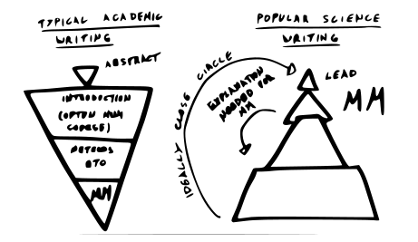

Seven things I learned during the PhD Cup media school
Whether you like it or not, a large part of a scientist’s job is about communicating. You have to pitch your ideas to collaborators, outline your plans to get grants, educate your students, and report your findings to the scientific community. It is hence a good investment to spend a bit of your precious time honing your soft skills.
Last month I participated at the Flemish PhD Cup, a science communication competition for young postdocs. The goal was to present our PhD as clearly and entertainingly as possible in three minutes. Most of us worked four to six years to obtain our PhD and needed a 45-minute presentation to explain our research in a thesis defense. Sufficient to say that the PhD Cup was no easy task.
Luckily for us, and our audience, the organizers made sure that we received a thorough preparation. The sixteen selected candidates, postdocs from fields as diverse as microbiology, law, language, history, and robotics, underwent an intensive four-day media training. During the first two days, we learned how to write popular science articles and how to give excellent presentations. In the next two days, we went to the Flemish Radio and Television (VRT) to learn how to tell a story, be interviewed, interact with a camera and how to get the best out of our voice.
I promised myself that if I made it to the finals, I would start a blog to communicate my research and ideas to a broader audience. Last Monday the competition ended. Though I did not make it to the top three, the other seven finalists and I gave it all to show that being a scientist is the coolest job in the world! In the last month, I had the incredible opportunity to grow as a communicator. Could there be a better first blog post than sharing some of the things I learned at the media school?
Below are the seven most important points I will remember from my education as a science communicator. For the more visually inclined people, you can view some of my sketchnotes of the media school here.
Good elevator pitch
You are at a conference, and you meet the authority in your field. She has one minute to spare for you to explain your research (everybody wants to talk to her!). How do you both inform and spark an interest in your work, using only a handful of sentences?
A good elevator pitch starts with a problem to clarify the relevance of your work. Your research provides, of course, a solution to this problem. For example, an ecologist might say: ‘We do not know how the photosynthesis of plants is affected by changes in environment temperature. I build models to help understand how plants adapt to changing temperatures.’
Likely, your science hero will respond with something as ‘Ah, that is nice for you.’ You have informed, but not involved! For this reason, you must include a sentence or two with a ‘what is in it for them’, something relevant to your audience. In the example, the ecologist might add ‘This way we can take the appropriate measures to counteract the effect of global warming.’ This might do well if your listener cares about the environment. Another conclusion to your pitch might be ‘This could help greenhouse farmers save a lot of heating costs’, which might appeal more to a capitalistic nature. Taylor the last part to the audience preferences!
So in conclusion, a good elevator pitch is a problem with a solution + a-what’s-in-it-for-them.
Stick to one central message
As passionate researchers, we are always full of ideas, and we want to tell you all about every one of them. Don’t do this! A good presentation, article, or lecture has ideally only a single message. Of the many awesome things you know and have done, pick only one! Your main message has, of course, many facets, on which you can elaborate, but there is only one main point which the audience should remember.
During my PhD, I developed mathematical models that can help with personalized medicine. Of these models, I made several theoretical discoveries and I have countless other equally exciting applications. I want to tell you how these models work and why they are different from what other models do, but my main point is that I made models for suggesting the best medicine for you.
Note that there is a difference between a main message and a theme. The main message is your main point, and both give the reader a grip on what you are going to tell and helps you build your text. The theme is vaguer and is determined by the message, not the other way around.
Structure text as a triangle
If you have the main message, tell it immediately. As scientists and experts, we like to give comprehensive reasoning and justification before getting to our main point. A reader just wants to know what you have to say. Only if he is interested, then he wants to hear the details. Think about this when you write your next research paper! This is also how a Nature summary abstract should be structured.

Involve your audience
Science communication is, in a way, an indirect way of communicating. There is not a lot of feedback from the audience to you. When preparing a talk, lecture, or article, think about your audience. Who are they? What do they know? What do they care for?
A sure way to engage your audience is to captivate them. Make them laugh, make them cry, make them think! Use their imagination to provoke a reaction. If you have the time, ask them something or let them do something. Your audience is already listing for an hour and will have to remain there for quite a while longer. Keep them entertained!
One tip is to make use of a 3D object to show during your presentation. Do you study the bacterial community at the roots of strawberry plants? Bring a plant and show them the roots, as one of my competitors has done. If I see you doing something, I can imagine doing it myself.
Tell a story!
‘Storytelling is the most powerful way to put ideas into the world today’ ~ Robert McKee
Scientists like to talk about facts, journalists want to tell a story. Facts push information out and are about knowledge. A story draws people in and is about remembering and understanding.
When you convey your research, try to structure your talk as a story. This can be your story, how you struggled in the lab to get to your results. It can also be the story of the objects of your research: tell the tale of the bacteria in your gut, how they struggle to survive and how they will rebel to you if you keep them unhappy by eating junk food.
My research is about developing machine learning methods to learn from pairwise data - about as far from a story as you can imagine. To explain my research, I told the tale of a zookeeper who received a new animal and did not know what to feed it.
Voice and posture
In addition to your content, you will use your voice and body. One of my first experiences as a teaching assistant was teaching for seven hours straight. This has taught me the importance of using your voice correctly if you want to last the day!
It is in our Flemish culture to enjoy a smooth and soothing radio voice. A pleasantly sounding voice that will last through the day comes from breath from the gut. To force this, our voice coach recommended us to pinch our buttocks tight when presenting, so we are inclined to use our stomach to breath. I don’t know anybody who actually does this though…
Whether you just give a presentation or if you teach a lot, the correct use of your voice is essential. Several exercises can be done to train your vocal cords. My favorite practice is to improve articulation. Put a small cork in your mouth to keep your jaws open and do your best to read some longer words as clearly as possible. Immediate results guaranteed!

When presenting, I dislike movement as this is distracting noise. I try to have a stable position, with my feet more or less directly below my shoulders. Hands are essential to accentuate what you are saying. Practice some movements to help you explain things. Remember, you are not a T-Rex! No need to keep your elbows fixed against your body!
Be yourself
The most important lesson of all: be yourself, it is your story! It does not matter that you have a raspy voice or that your research has no direct application. I want to hear why your research matters to you.
I consider myself to be a shy and introvert guy who has to push himself every time to stand before an audience or class. Still, I try to subject myself to giving presentations, lectures, tweeting, and writing because I love to talk about what I do. The most fun part of my job is working together with students and colleagues, doing the science thing and making and investigating stuff. Finding people to work with is only possible if many people understand what I do and want to get involved. That is why science communication is important to me.